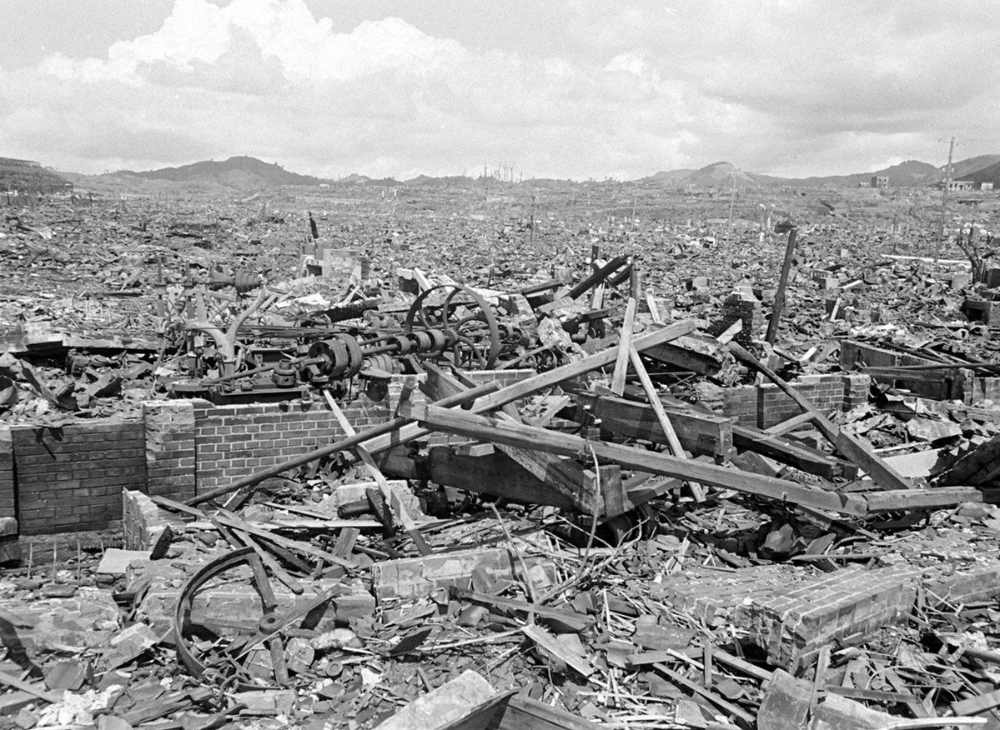
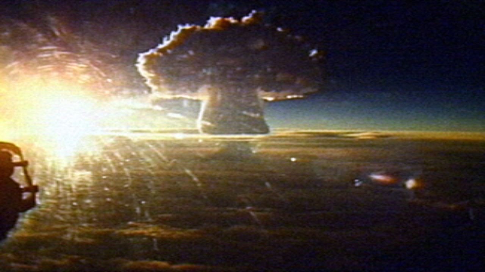
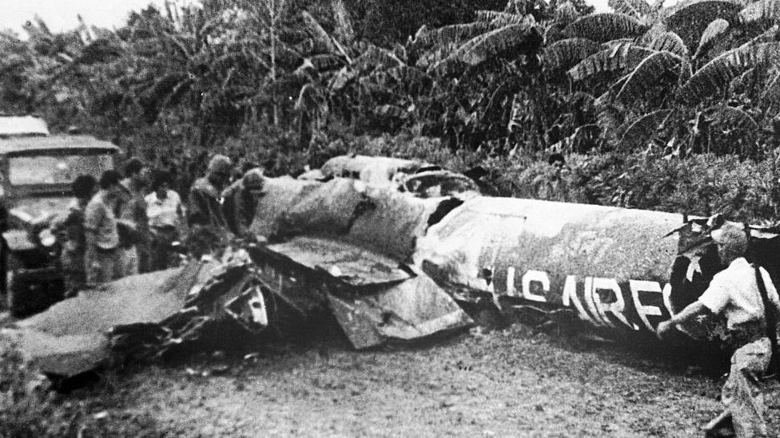
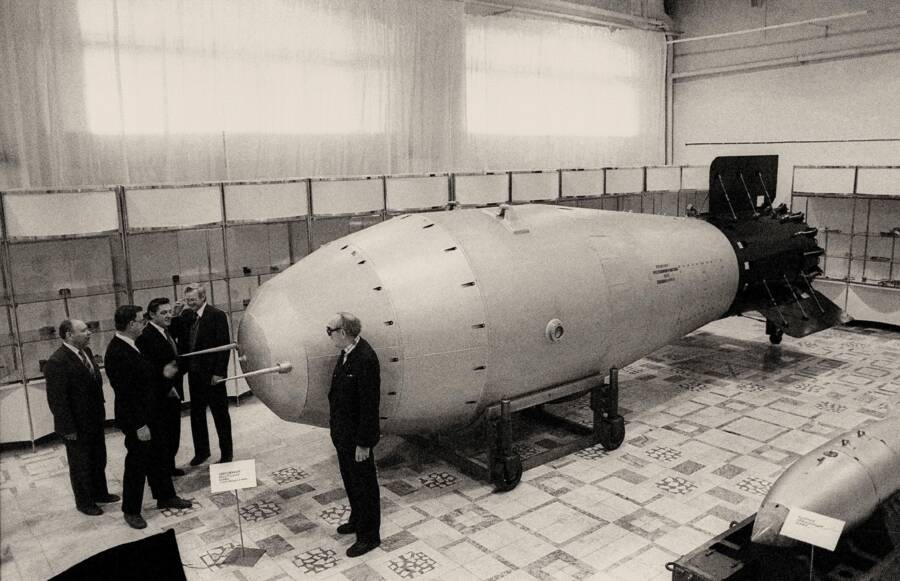

A Consequência: Hiroshima (1945)
Em 6 de agosto de 1945, os Estados Unidos lançaram a bomba atômica "Little Boy" sobre a cidade de Hiroshima, no Japão. O ato marcou o primeiro uso de armas nucleares em combate, revelando ao mundo seu terrível poder.

A Escalada: Testes Nucleares (Anos 50)
Tsar Bomba: Há exatos 61 anos acontecia a maior explosão humana já vista. O dia 30 de outubro de 1961 ficou marcado pela explosão que tinha 3.300 vezes o poder de destruição da bomba lançada em Hiroshima

À Beira do Abismo: Crise dos Mísseis (1962)
Em outubro de 1962, a descoberta de mísseis nucleares soviéticos em Cuba desencadeou a mais tensa crise da Guerra Fria. Foi o momento em que a "Destruição Mútua Assegurada" se tornou uma possibilidade real.

O Auge do Poder: A Tsar Bomba (1961)
Esta é a AN602, mais conhecida como "Tsar Bomba", a arma nuclear mais poderosa já detonada. Testada pela União Soviética, um símbolo da insanidade da Corrida Armamentista.
EUA vs. URSS: O Acúmulo de Ogivas
Este gráfico mostra a impressionante escalada quantitativa da Corrida Armamentista...
A Tríade Nuclear (Arsenal dos EUA - 1965 vs. 1985)
A "Tríade Nuclear" refere-se às três formas de lançar armas nucleares...
Escala de Destruição: Hiroshima vs. Ogiva Moderna
A quantidade de armas não conta toda a história...